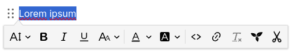
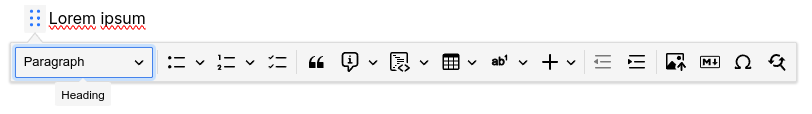

 

The default note type in Trilium, text notes allow for rich formatting, tables, images, admonitions and a handful of other features.
Most of the interaction with text notes is done via the built-in toolbars. Depending on preference, there are two different layouts:
Fore more information see Formatting toolbar.
Here's a list of various features supported by text notes:
| Dedicated article | Feature |
|---|---|
| General formatting |
|
| Lists |
|
| Block quotes & admonitions |
|
| Tables |
|
| Developer-specific formatting |
|
| Footnotes |
|
| Images |
|
| Links |
|
| Include Note |
|
| Insert buttons |
|
| Other features |
|
Text notes are usually opened in edit mode. However, they may open in read-only mode if the note is too big or the note is explicitly marked as read-only. For more information, see Read-Only Notes.
There are numerous keyboard shortcuts to format the text without having to use the mouse. For a reference of all the key combinations, see Keyboard Shortcuts. In addition, see Markdown-like formatting as an alternative to the keyboard shortcuts.
For the text editing functionality, Trilium uses a commercial product (with an open-source base) called CKEditor. This brings the benefit of having a powerful WYSIWYG (What You See Is What You Get) editor.